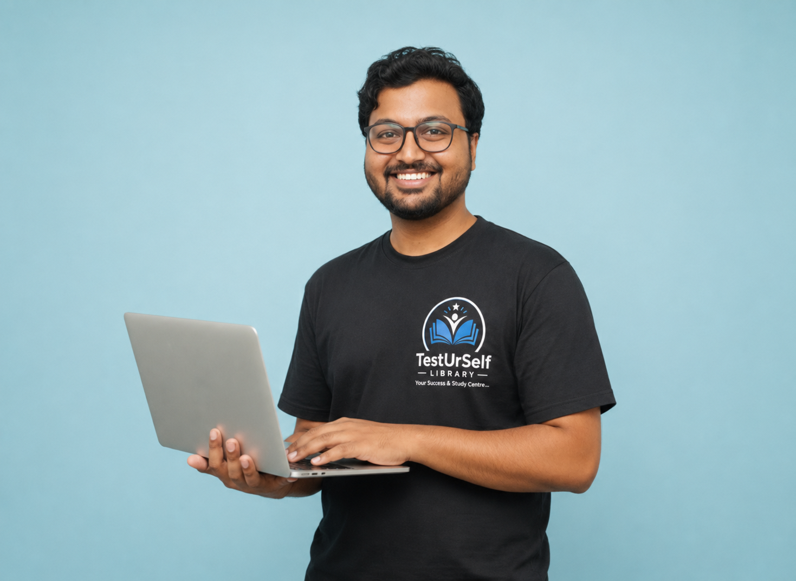
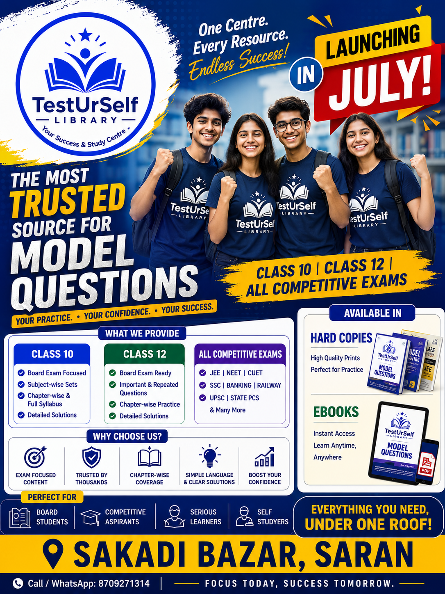
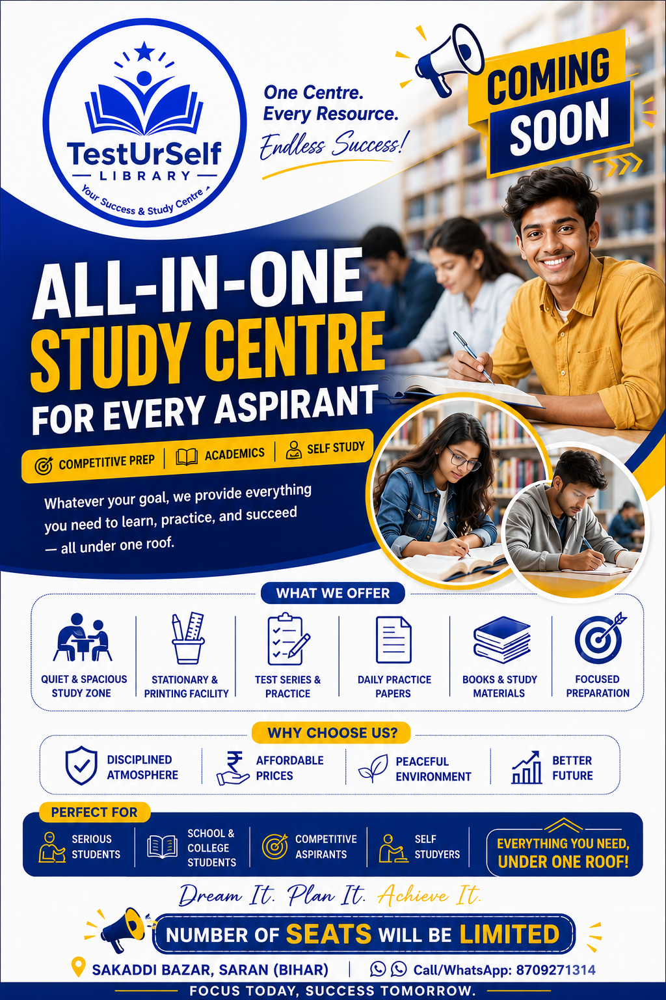
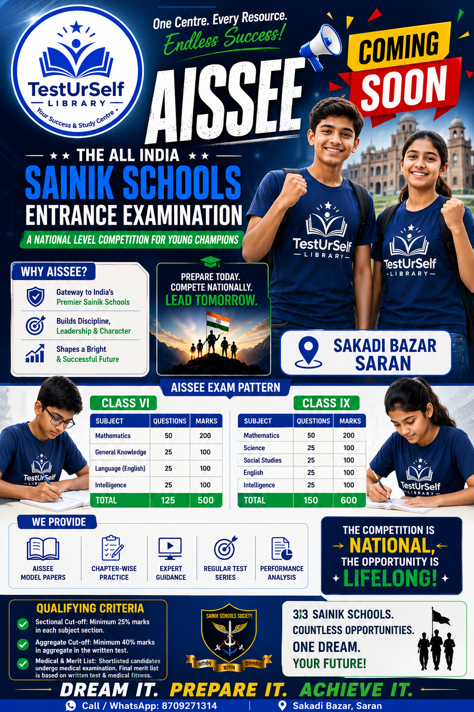
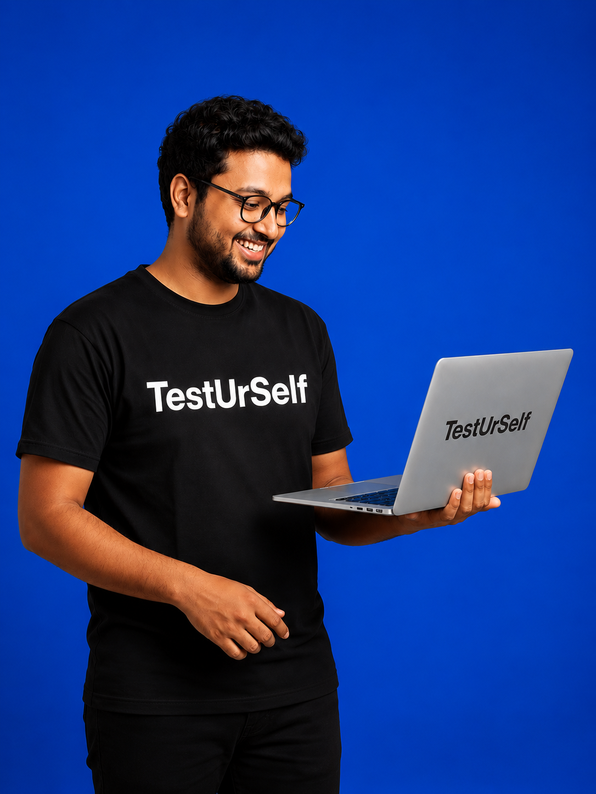

8 AIR 1in GATE (MT) since 2019
YOUR SUCCESS & STUDY CENTRE
Sakadi Bazar · Saran, Bihar
The right space.
The right start.
A modern learning space that helps every serious student study deeper, practice smarter and move forward with confidence.
DISCIPLINEFOCUSRESULTS

FOUNDER & MENTORSamarjeet Kumar SinghFrom IIT to IISc — inspiring the next generation of engineers.
TRUSTED RESULTS
520+Students in top 10
1,50,000+Tests attempted
2× GATE
CRACKED
CRACKED
2× IIT
CRACKED
CRACKED
YOUR SUCCESS PATH
Find your
focus
Quiet study zoneBuild your
routine
Daily practiceTest your
progress
DPPs & quizzesReach your
goal
Confident results✦LIMITED SEATSFor serious aspirants
01STUDY. PRACTICE.
REPEAT.
REPEAT.
ONE CENTRE. EVERY RESOURCE.
ENDLESS SUCCESS.
FOCUS TODAY, SUCCESS TOMORROW.
WELCOME TO TESTURSELF
More than a library.
Your daily advantage.
Whether you’re preparing for boards, competitive exams or simply building a powerful study routine, TestUrSelf gives you the space, structure and support to keep showing up.
Find us in Saran ↗WHAT YOU GET
Everything needed
to stay in the zone.
Designed around focused, consistent preparation — with less distraction and more direction.
⌁
Quiet study zone
Spacious seating and a peaceful setting where deep work becomes a habit.
✎
Stationery & printing
Everyday essentials available right where you study, when you need them.
✓
Tests & DPPs
Daily practice papers, quizzes and test series to keep your preparation sharp.
▤
Study materials
Useful books, notes and model-question resources for every aspiration.

PREPARE WITH PURPOSE
Your goal.
Your pathway.
Build confidence with curated practice and materials for the exams that matter to you.
- Class 10 & 12Board-focused practice
- Competitive examsJEE · NEET · CUET · SSC · Banking & more
- AISSEE preparationFor future Sainik School aspirants
FREE RESOURCES
Download essential
study materials.
Access our curated collection of notes, DPPs, and structured resources to boost your preparation momentum.
STAY AHEAD
What's happening
at TestUrSelf.
Sainik School Entrance
Class VI & IX · Model papers, practice and guidance
Class 10 & 12 preparation
Chapter-wise practice · Repeated questions · Clear solutions
Exam-ready practice
JEE · NEET · CUET · SSC · Banking · Railway and more
FROM OUR NOTICE BOARD
Designed to keep
you inspired.


MEMBERSHIP
Choose the rhythm
that works for you.
Simple, accessible membership plans for disciplined study. Ask us for current availability and the plan that fits your preparation.
STARTER
Day Pass
Visit for a day
- Quiet study-zone access
- Stationery & printing available
- Best for a focused sprint
MOST POPULAR
Monthly Focus
Build your routine
- Dedicated daily study access
- Tests, DPPs & study material
- Priority updates & support
PREP READY
Exam Track
Prepare with direction
- Focused exam resources
- Practice papers & quizzes
- Program-specific guidance
THE FOCUS JOURNAL
Small reads for
big momentum.
STUDY SMART · 4 MIN READ
The 45-minute focus ritual that makes consistency easier.
Read story →EXAM PREP · 3 MIN READ
How to turn daily practice papers into real confidence.
Read story →STUDENT LIFE · 5 MIN READ
A study space is not a luxury. It is a strategy.
Read story →WHY STUDENTS CHOOSE US
Small daily steps.
A brighter future.
✦ Peaceful
environment
environment
✦ Disciplined
atmosphere
atmosphere
✦ Affordable
prices
prices
✦ Better
results
results

#1
PLATFORM
FOUNDER
FOUNDER
A TRUSTED INITIATIVE
Backed by India's Best
Platform for GATE MT & XE.
TestUrSelf Library is a local initiative brought to you by Samarjeet Kumar Singh, founder of India's leading engineering EdTech platform. We created this physical space to bring the exact same dedication, strict discipline, and top-tier resources that produced our online toppers directly to students in Saran.
8AIR 1s in GATE
520+Top 10 Ranks
1.5L+Tests Attempted